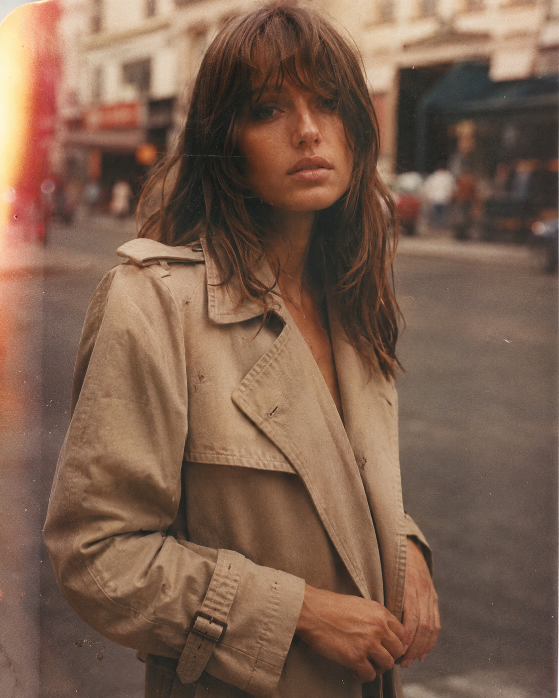
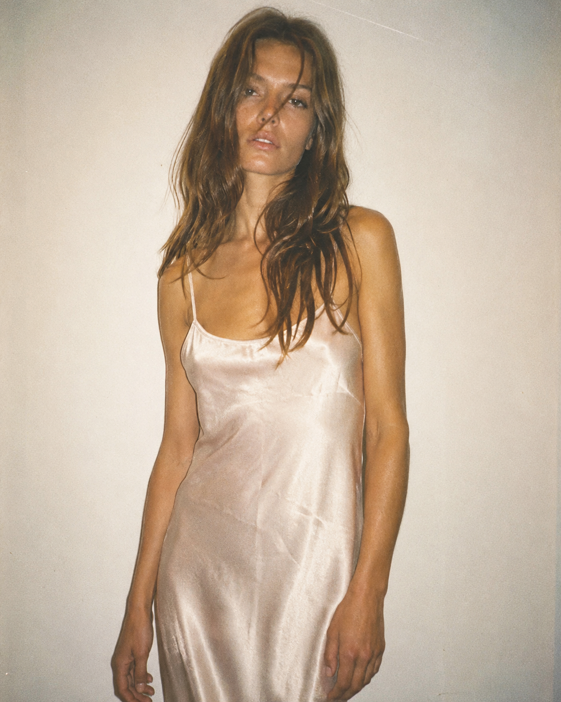
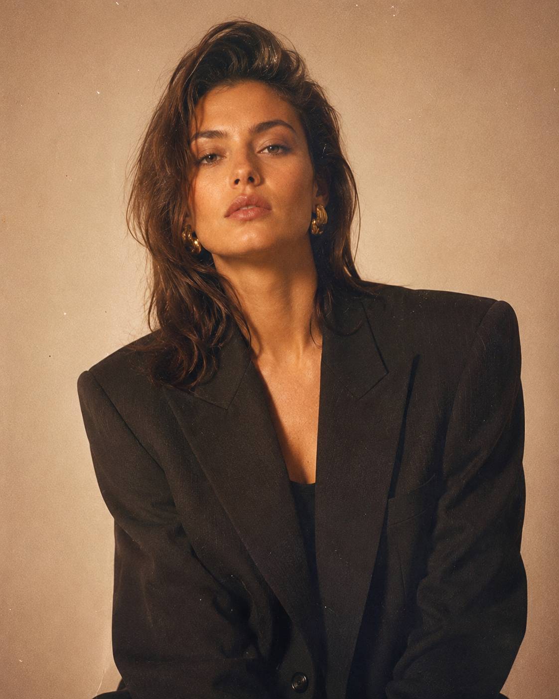
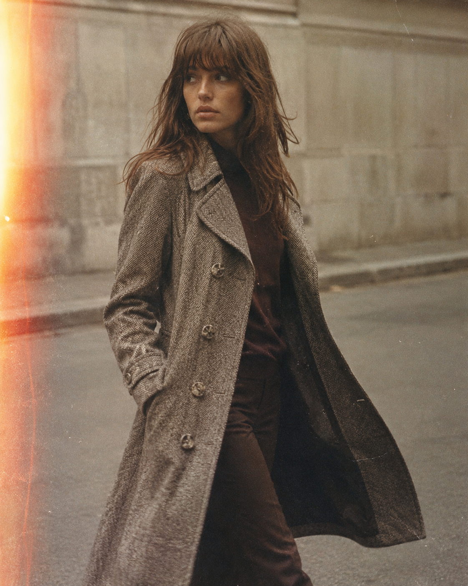
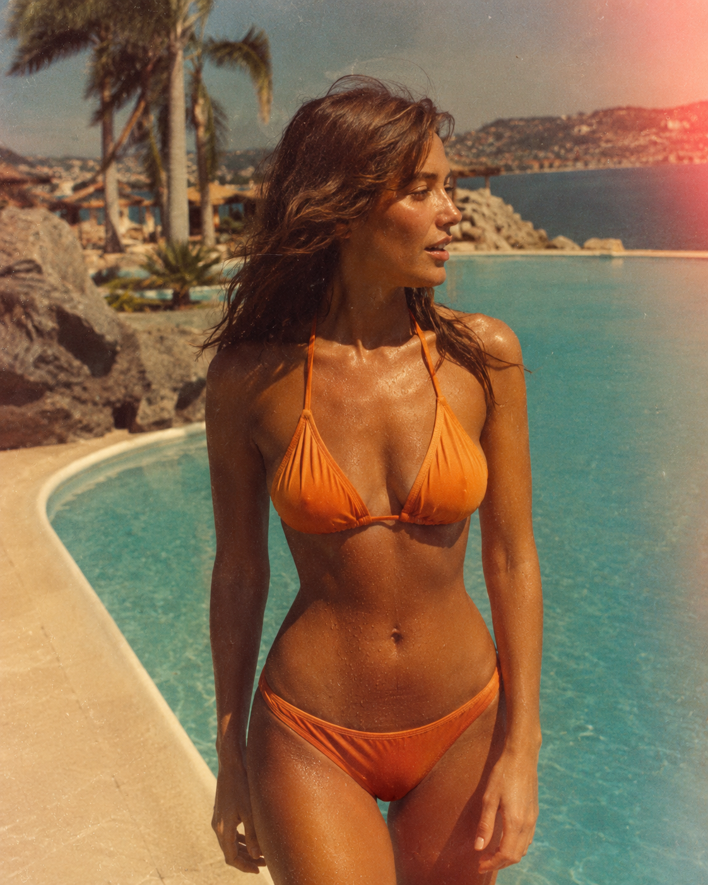
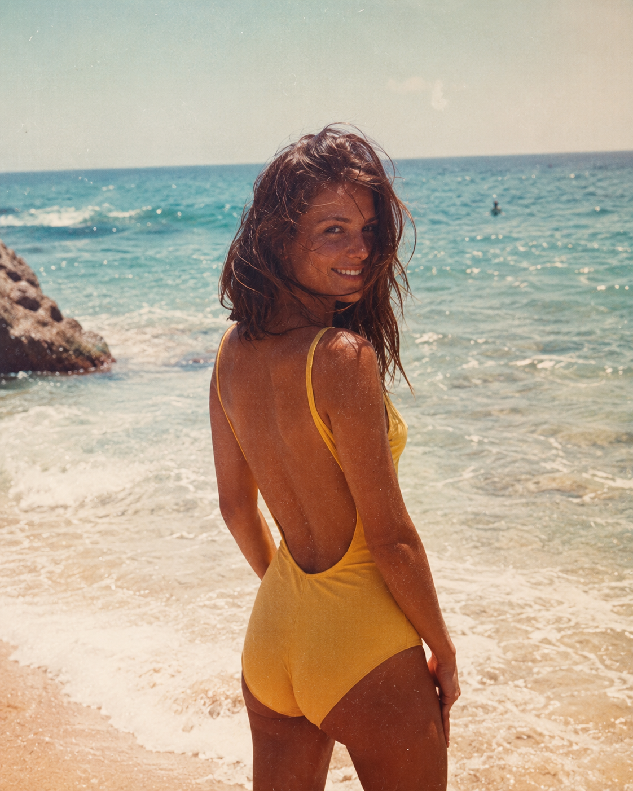
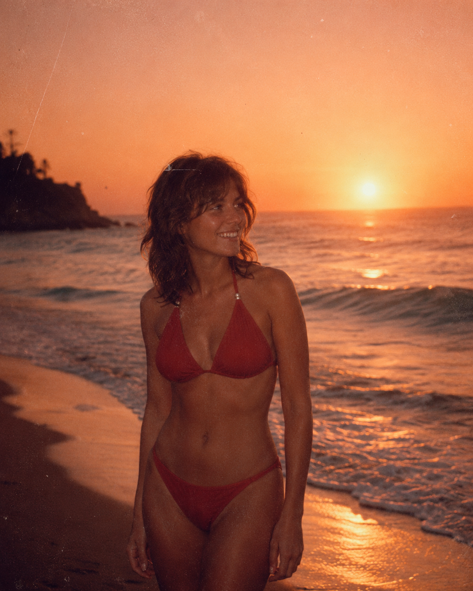

V.01
Pièce unique

Capsule 03 — Archive Vintage
Chaque pièce vient d'ailleurs — sourcée, portée, réévaluée. On ne réédite pas le passé, on le remet en scène tel qu'il nous arrive, usure comprise.
La capsule Vintage ne suit pas le calendrier des saisons. Elle s'alimente au rythme des trouvailles — dépôts-ventes, marchés, garde-robes de famille. Chaque pièce a déjà vécu une vie avant d'arriver chez HOME.SAKE, et cette vie reste visible : un bouton changé, une doublure qui a jauni, une coupe qui appartient clairement à une autre décennie.
On ne restaure pas à l'identique. On nettoie, on répare ce qui doit l'être pour être porté, et on laisse le reste raconter d'où la pièce vient.




Capsule 04 — Acapulco.Bikini
Quatre pièces sourcées dans les malles d'un même voyage au Mexique, années 70. Kodachrome saturé, sel séché sur le tissu, la chaleur encore lisible sur chaque photo.



"